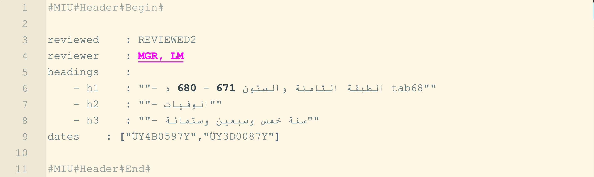
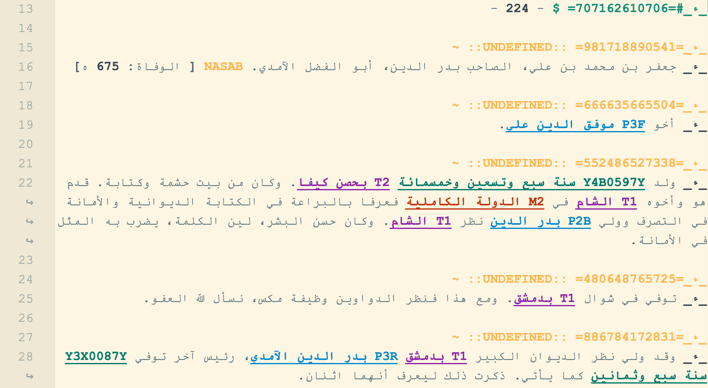
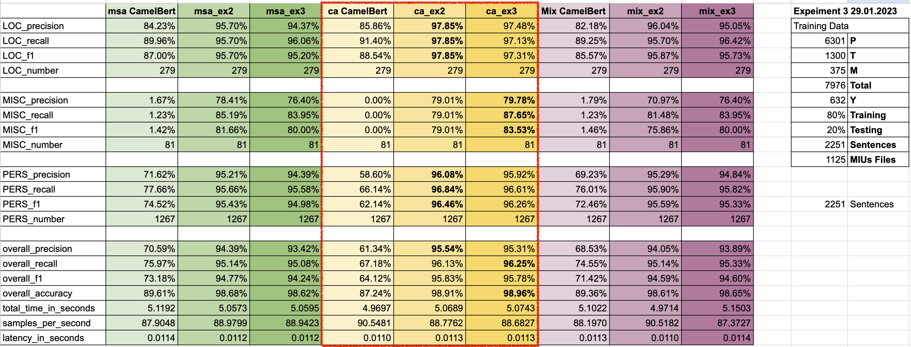
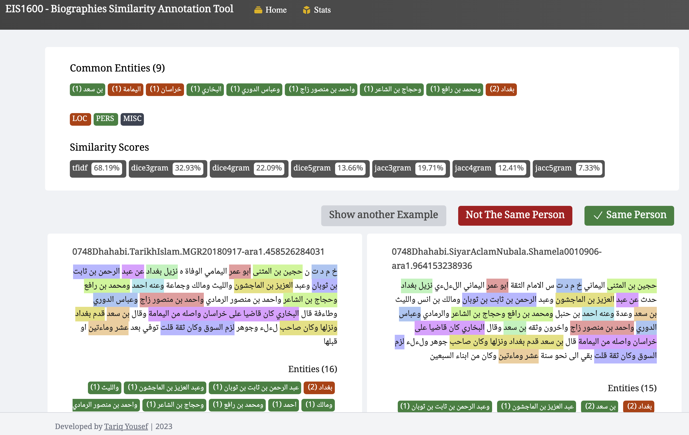

background-image: url(./images/eis1600_logo.png) background-size: contain class: center ??? project's logo --- background-image: url(./images/eis1600_bg.png) background-size: contain class: center, middle # EIS1600: *Current Progress* ⥈ Hamid Reza Hakimi, PhD Researcher (AIS)<br> Lisa Mischer, PhD Researcher (AIS *&* CS)<br> Tariq Yousef, CS Researcher (NLP, Deep Learning)<br> Maxim Romanov, Research Group Leader ⥈ Universität Hamburg --- background-image: url(./images/eis1600_bg.png) background-size: contain class: center, middle ### Current Tasks: *Arabic and Islamic Studies* .left[ - AIS: structural tagging of new texts - ±1,000 texts (±270 mln tokens) identified as relevant in OpenITI - processed: 99 texts - ±70 mln tokens; - ±496,000 biographical records (± 680,000 expected total); --- - The OpenITI corpus (Release ver. 2022.1.6): - Open: [https://github.com/OpenITI](https://github.com/OpenITI); - Published on Zenodo: [](https://doi.org/10.5281/zenodo.6808108) - 11,195 text files (± 2.25 billion tokens); - most texts are “singles”, but ±2,755 book titles have multiple versions; - 6,785 unique works (approximately 1.08 billion tokens); - 2,887 different authors; - Feb 24, 2023: Release ver. 2022.2.7 [](https://doi.org/10.5281/zenodo.7687795) ] ??? Now that texts are brought together into a chronological (diachronic) corpus, we can provide a general description of our new metaobject. The OpenITI corpus (Release ver. 2022.1.6) includes 11,195 text files, running into slightly over 2.25 billion tokens. Most of works are represented by single versions, but some 2,755 book titles have multiple versions often based on different printed editions. In terms of unique book titles, the corpus includes 6,785 unique works (approximately 1.08 billion tokens), written by 2,887 different authors. --- background-image: url(./images/eis1600_bg.png) background-size: contain class: center, middle ### Current Tasks: *engineering* & *computer science* .left[ - ENG: annotation scheme update (EIS1600 mARkdown) - ENG: EIS1600 python library - ENG/CS: conversion into MIUs (with/for data mining, and NLP analysis) --- - CS: NER model fine-tuning (CAMeL BERT) - CS/AIS: Identification of individuals (conflating biographical records into “people”) - CS: “lexical complexity reduction” - CS: automatic segmentation into MIUs --- - Data Abstractions - Data Linking (Local Linked Data) - MasterChronicle Development ] --- background-image: url(./images/eis1600_bg.png) background-size: contain class: center, middle ### Annotation scheme: *YML Header Example*  .center[`0748Dhahabi.TarikhIslam.MGR20180917-ara1.707162610706.EIS1600`] --- ### Annotation scheme: *Annotation Scheme Example*  .center[`0748Dhahabi.TarikhIslam.MGR20180917-ara1.707162610706.EIS1600`] --- background-image: url(./images/eis1600_bg.png) background-size: contain class: left, middle ### Fine-tuning CAMeLBERT Models for NER: - current accuracy for people (names): ~98% - current accuracy for places (toponyms): ~97%  --- background-image: url(./images/eis1600_bg.png) background-size: contain class: center, middle ### Fine-tuning CAMeLBERT Models for NER (larger) --- background-image: url(./images/eis1600_bg.png) background-size: contain class: center, middle ### Conflating biographical records into “people”: 